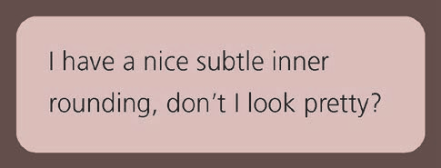

要实现如下图片效果
可以用两个div嵌套实现 下面我们使用box-shadow outline hack实现
box-shadow贴着border-radious outline 不会 所以这里用outline与box-shadow相互叠加实现这种效果
一般用法 background: linear-gradient(#fb3, #58a);
色标拉近到40% 60% 这样只有中间的20%在渐变
色标设置为到50% 50%
利用这一原理来设置条纹背景 background-size的高度设置为30px 相当于每30px都由两个颜色平分
设置不等宽条纹 其实#58a的宽度达到了70% 下面两个等价
如果要设置三个及以上条纹
竖向条纹 增加to right,(或者90deg,) background-size 将横向设置为100%
45度倾斜条纹
还有许多，不在叙述